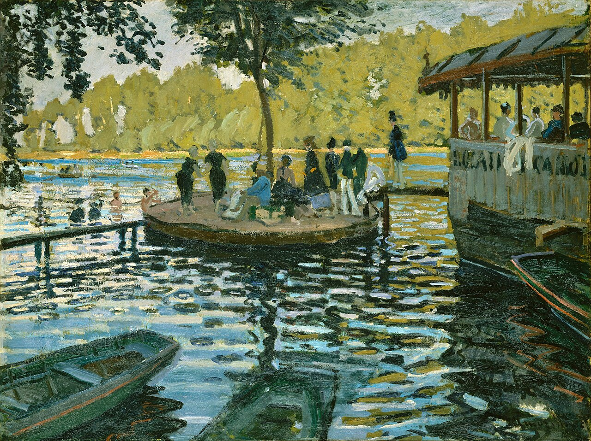
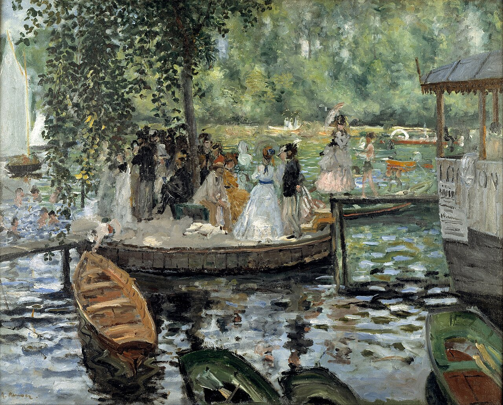
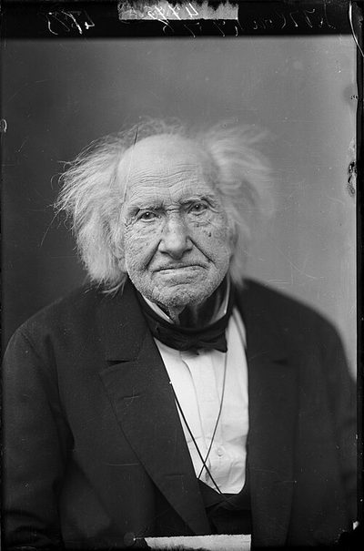
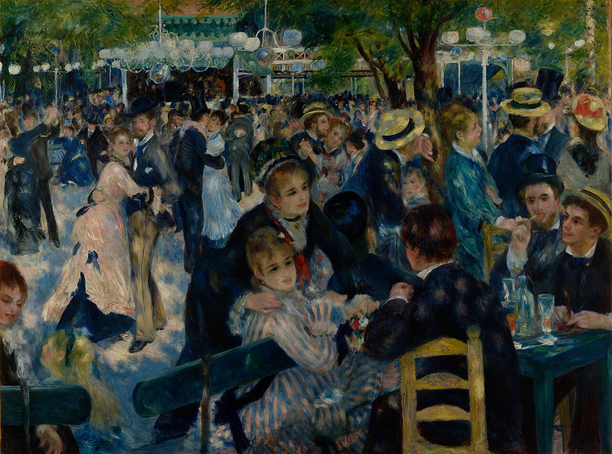
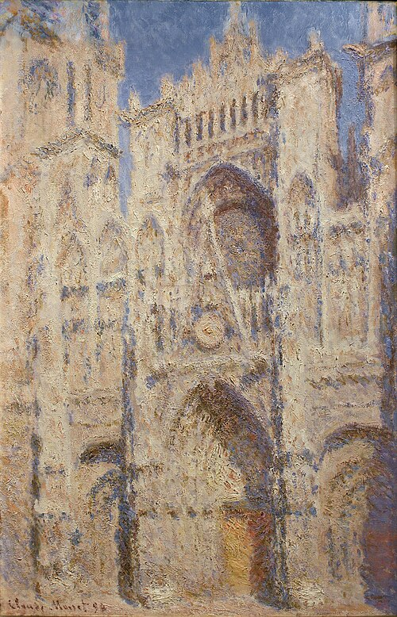
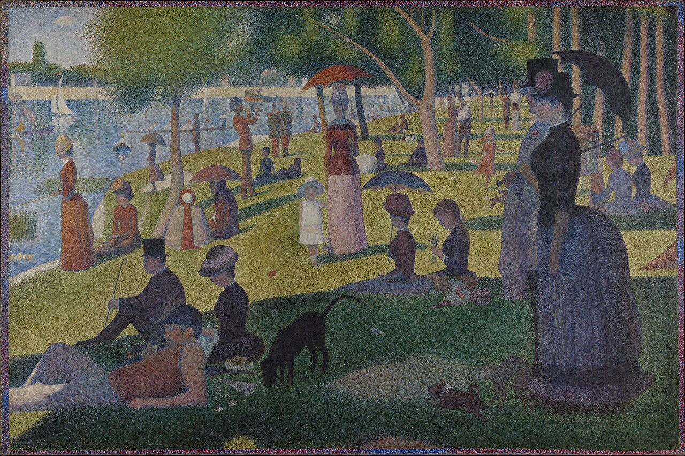

1874年4月15日、パリの写真家のスタジオで革命が始まった。
まず「サロン」とは何かを知る必要がある。サロンサロン（Salon de Paris）
1667年にルイ14世の後援で始まったフランスの公式美術展覧会。アカデミーが審査を行い、出品の可否を決定した。19世紀には年1回の開催で、来場者は数十万人規模に達した。——1667年に始まったフランス国家公認の美術展覧会だ。王立アカデミーが審査員を務め、出品作を選定する。19世紀のパリで画家として生きるには、ここに作品を並べてもらうことがほぼ唯一の道だった。サロンへの入選はパトロンの獲得、画材商との契約、名声のすべてに直結する。落選はキャリアの危機を意味した。審査基準は厳格で保守的——歴史画・神話画・宗教画が最上位に位置づけられ、風景画や風俗画は格下とされた。1863年には応募作の3分の2が落選し、怒った画家たちの声を受けてナポレオン3世が「落選展（サロン・デ・ルフュゼ）」を開催するほどだった。
1874年にナダールのスタジオに集まった31人は、一枚岩ではなかった。サロンに何度出しても落選し続けた者がいた。セザンヌはその筆頭だ。サロンに入選した経験はあるが、審査員の好む方向性——古典的主題、滑らかな仕上げ、理想化された人体——に辟易していた者もいた。ピサロやドガがそうだ。ドガにいたってはアカデミーの正統な訓練を受けたエリートだが、サロンが課す枠組みそのものに反発していた。さらに、マネのようにサロンに出品し続けながらも若い画家たちの精神的支柱となった人物もいる（マネ自身はこの独立展には参加していない）。つまり「印象派」とは、単一の美学を共有する集団ではなく、サロン体制への多様な不満が交差する場だった。落選者の逆襲、という物語は半分だけ正しい。もう半分は、通っていた者たちの静かな離反だ。
場所はカプシーヌ大通り35番地。写真家ナダールのスタジオの2階だった。31人の画家が、公式サロンに背を向けて独自の展覧会を開いた。来場者は約3,500人。同年のサロンに50万人が押し寄せたことを考えると、小さな集まりだ。だが批評家ルイ・ルロワが風刺紙『ル・シャリヴァリ』に発表した記事が、意図せず歴史を変えた。ル・シャリヴァリは当時パリで人気のあった風刺雑誌で、ルロワ自身も批評家であると同時に劇作家・版画家——つまり「笑わせるプロ」だった。クロード・モネクロード・モネ（1840–1926）
フランスの画家で印象派の創設者の一人。屋外の光と大気の移ろいを捉えることに生涯を捧げた。睡蓮の連作で知られる。の『印象・日の出』を見たルロワは書いた——「印象だと？ そりゃそうだろう、印象を受けたんだから印象があるに決まっている…壁紙だって下絵の段階の方がまだ完成度が高い」。
"His Majesty, wishing to let the public judge the legitimacy of these complaints, has decided that the works of art which were refused should be displayed in another part of the Palace of Industry."
陛下は、これらの苦情の正当性を公衆に判断させるため、落選した作品を産業宮の別の一角に展示することを決定した。
— ナポレオン3世の官房、1863年の落選展に関する声明
ルロワの記事は対話形式のコント——架空のアカデミー派の老画家が展覧会を見て発狂していくという構成だった。画家たちはこの「印象派」という呼び名を引き受けた。（なお、ルロワの意図が純粋な敵意だったのか、それとも風刺紙の芸風に則った誇張されたユーモアだったのかには議論がある。記事の内容自体は明確に否定的だが、わずか4日後に別の批評家カスタニャリが同じ「印象派」の語を肯定的に使っており、ルロワの嘲笑は意外なほど短命だった。）しかし批評家が本当に怒っていたのは、名前ではない。筆跡が見えることだった。当時のアカデミズムでは、筆の痕跡を消し、表面を滑らかに仕上げることが技術の証だった。写真のように精密であることが「上手い絵」の条件だった。モネやルノワールの絵は、その基準からすれば未完成にしか見えない。

クロード・モネ『印象・日の出（Impression, soleil levant）』（1872年）｜油彩・カンヴァス、48×63cm｜マルモッタン・モネ美術館（パリ）蔵｜ルロワがこの絵のタイトルから「印象派」という呼び名を作った。港の風景は筆跡がそのまま残り、空と水面の境界は曖昧で、太陽の橙だけが鮮烈に浮かぶ。パブリックドメイン。
| アカデミー派（公式サロン） | 印象派 | |
|---|---|---|
| 主題 | 神話・歴史・宗教の理想化された場面 | 日常の風景・人物・都市の瞬間 |
| 色の扱い | パレットで混色し、滑らかに塗る | 原色に近い色をキャンバスに直接並置する |
| 筆跡 | 見えないように仕上げる | あえて残す。「未完成」に見える |
| 制作場所 | アトリエ（室内照明） | 屋外（太陽光の下で直接描く） |
| 目標 | 普遍的な「美」の再現 | 一瞬の光と空気の「印象」を定着する |
筆触分割の原型は、第1回印象派展の5年前——1869年の夏に生まれていた。
パリ西郊のブージヴァル近く、セーヌ川に浮かぶ水上レストラン「ラ・グルヌイエール（蛙の池）」。船遊びと水浴びを楽しむパリ市民で賑わうこの場所に、2人の若い画家がイーゼルを並べた。クロード・モネ、29歳。ピエール＝オーギュスト・ルノワールピエール＝オーギュスト・ルノワール（1841–1919）
フランスの画家。印象派の中心人物の一人。人物画を得意とし、光と色彩で人間の温かみを表現した。晩年はリウマチに苦しみながらも筆を手に縛り付けて描き続けた。、28歳。どちらもサロンに落選を重ね、金がなかった。モネは絵の具を買う金すらなく、友人のバジーユに手紙で援助を請うている。ルノワールは実家に身を寄せていた。ラ・グルヌイエールの店主フルネーズは、彼らの絵を食事と引き換えに受け取ったという。

モネ『ラ・グルヌイエール』（1869年）｜メトロポリタン美術館蔵｜水面の反射を青・白・茶の大胆なストロークで捉える。人物はシルエットに近い。

ルノワール『ラ・グルヌイエール』（1869年）｜ストックホルム国立美術館蔵｜人物に焦点を合わせ、小さな色の斑点（タッシュ）でドレスの白や木漏れ日を柔らかく構成する。
2人は同じ場所に立ち、ほぼ同じ構図で描いた。だが仕上がりはまったく違う。モネは水面に焦点を合わせた。光の反射を大胆なストロークで捉え、人物はシルエットに近い。風景と光の画家だった。一方ルノワールは人物に焦点を合わせた。小さな色の斑点——フランス語でタッシュタッシュ（Tache）
フランス語で「斑点」「しみ」の意。印象派では、小さな筆のタッチで色を置く技法を指す。マネのタシスム（色の塊をぶつける技法）から発展した。と呼ばれる——を一つひとつ隣に置いていき、女性のドレスの白、帽子の影、木漏れ日を柔らかく構成した。人間と色の画家だった。
この夏に2人が実践した技法——短い筆のタッチで、未混合の色を隣り合わせに直接キャンバスに置く——は、美術史において「印象派の技法が実質的に誕生した瞬間」とされることが多い。もちろん先行者はいた。ドラクロワは影に補色の点を置いたし、ターナーは光を筆触の集積で表現した。マネは色の塊をぶつけるタシスムを確立していた。だがそれらを一つの絵画スタイルとして一貫して実践したのは、この2人が最初だった。どちらがイニシアチブを取ったかは、今もわかっていない。競い合いの中で同時に到達したというのが通説だ。
"I do have a dream, a painting, the baths of La Grenouillère, for which I have made some bad sketches, but it is only a dream. Renoir, who has just spent two months here, also wants to do this painting."
ラ・グルヌイエールの浴場の絵を描くという夢がある。ひどい下絵をいくつか描いたが、まだ夢にすぎない。ルノワールもここに2ヶ月いて、同じ絵を描きたがっている。
— クロード・モネ、フレデリック・バジーユ宛ての手紙（1869年9月25日）
モネが「ひどい下絵」と呼んだそのスケッチが、今日ではメトロポリタン美術館に収蔵され、印象派の出発点として世界中から人が見に来る。モネは後にこの場所をもとにした大作を制作したとされるが、その絵は第二次世界大戦中にベルリンで失われた。現存するのは「ひどい下絵」だけだ。しかしその「下絵」にこそ、筆触分割の衝動が——計算ではなく、光を追いかける身体の反射として——もっとも生々しく残っている。
では、印象派の画家たちはなぜ色を混ぜなかったのか。手を抜いたのではない。むしろ逆だ。1874年の時点で、人間の網膜が光をどのように色に変換するかという神経メカニズムは科学的に未解明だった。ヘルムホルツの三色説ヘルムホルツの三色説（Young-Helmholtz theory）
人間の網膜には赤・緑・青に感応する3種類の受容体があり、すべての色はこの3つの信号の組み合わせで知覚されるという説。トマス・ヤングが1802年に提唱し、ヘルムホルツが1850年代に精緻化した。（1850年代）は存在したが、錐体細胞の詳細な仕組みやヘリングの反対色説ヘリングの反対色説（Opponent-process theory）
色は赤⇔緑、青⇔黄、白⇔黒の3つの対立軸で処理されるという説。エヴァルト・ヘリングが1878年に提唱。三色説と矛盾するように見えたが、20世紀後半に両者は網膜と脳の異なる段階で同時に機能していることが判明した。との統合は20世紀を待たねばならない。つまり、画家たちは科学が答えを出す前に、色の科学を——直感的にではあるが——理解していた。筆触分割筆触分割（Broken color / Divided touch）
色を混ぜずに、小さな筆のタッチで異なる色を隣り合わせに置く技法。遠くから見ると脳がそれらを混ぜて新しい色として認識する。とは、色を混ぜずに並べることで、鑑賞者の脳に混色させる技法だ。なぜそうするのか。答えは「混ぜると色が死ぬから」だ。
左: パレットで混ぜると光が減って色がくすむ（減法混色）。右: ドットで並べると各色の明るさが保たれ、脳が新しい色として知覚する（視覚混合）。
減法混色減法混色（Subtractive mixing）
絵の具やインクを混ぜる方式。各色素が特定の波長を吸収（=光を「引き算」）するため、混ぜるほど反射光が減り、色は暗くなる。全部混ぜると黒に近づく。とは、絵の具を物理的に混ぜることだ。青い絵の具は赤と緑の光を吸収し、黄色い絵の具は青い光を吸収する。両方を混ぜると、吸収される波長が増え、反射される光が減る。引き算の積み重ね。だから混ぜるほど暗く、濁る。小学校の図工で全色を混ぜると黒っぽい泥色になった経験があるだろう。あれが減法混色の宿命だ。
下の3つの色パッチは、遠くから見るとそれぞれ1色に見える。スライダーで拡大してみよう。
草原の緑
夕焼けの暖色
空の青紫
概念的な可視化。実際の絵画ではドットのサイズや配置は不規則で、画家ごとに異なる。ここでは原理を示すために均一なドットパターンで表現している。
あなたのスマートフォンの画面も同じ原理で動いている。画面に表示されている「白」は、実はRGB——赤・緑・青の極小のサブピクセルが同時に光っているだけだ。黄色に見えるピクセルは赤と緑が光り、青が消灯している。印刷物のCMYKも同じ。シアン・マゼンタ・イエロー・ブラックのインクの微小な点が、紙の上で視覚的に混ざる。19世紀の画家たちが直感で到達した原理を、現代のテクノロジーは毎日使い倒している。
2つの色を選ぶと、左に「パレットで混ぜた結果」、右に「ドットで並べた結果」が表示される。
色A
色B
パレット混色（減法）
ドット並置（視覚混合）
減法混色はRGBチャンネルの積で近似（簡略化Kubelka-Munkモデル）。視覚混合はRGB値の算術平均。実際は照明条件や視距離に依存する。
シュヴルールの発見——色は隣人に影響される
印象派より40年以上前に、科学の側から色の「ふるまい」を解明した人物がいる。ミシェル＝ウジェーヌ・シュヴルールミシェル＝ウジェーヌ・シュヴルール（1786–1889）
フランスの化学者。102歳まで生きた。有機化学の父と呼ばれるが、色彩理論でも大きな影響を残した。——化学者であり、有機化学の創始者であり、102歳まで生きた。彼の色彩理論は、タペストリー工場でのトラブルから始まった。

ミシェル＝ウジェーヌ・シュヴルール
Michel Eugène Chevreul / 1786–1889
1824年にゴブラン織工場の染色部門長に就任。「染料の色がくすむ」という織工たちの苦情を調査し、問題が化学ではなく光学にあることを発見。1839年に『色彩の同時対比の法則について』を刊行。ドラクロワからモネ、スーラ、ゴッホに至る色彩分割の系譜はここから始まった。
ゴブラン工場の織工たちは不満だった。「黒い糸がくすんで見える」と。シュヴルールは糸の染料を分析したが、化学的には問題がない。原因は糸そのものではなく、隣に並んでいる糸の色だった。青い糸の隣に置かれた黒い糸は、橙色がかって見える。橙は青の補色補色（Complementary color）
色相環で正反対に位置する色のペア。赤⇔緑、青⇔橙、黄⇔紫など。並べると互いの鮮やかさが強調される。だ。脳が「差を誇張する」ように働くため、実際には存在しない橙のニュアンスが見えてしまう。
シュヴルールの同時対比の法則。同じ色でも、隣に何があるかで見え方が変わる。脳は隣接する色の「補色」方向に知覚をシフトさせる。
中央の2つの正方形は完全に同じ色（#808080）。背景色を変えて、同じ色がどれほど違って見えるか確かめよう。
中央のパッチはすべて同一の #808080 です。
シュヴルールの同時対比の法則（1839年）に基づく概念的デモ。実際の対比効果は面積比、照明条件、個人の色覚によって異なる。
ウジェーヌ・ドラクロワウジェーヌ・ドラクロワ（1798–1863）
フランスのロマン主義を代表する画家。シュヴルールの講義に通い、ノートを取った。印象派に大きな影響を与えた。はシュヴルールの講義に通い詰め、ノートを取った。イギリスでターナーJ・M・W・ターナー（1775–1851）
英国の風景画家。光と大気を追求し、晩年の作品はほとんど抽象に近い。モネに深い影響を与えた。の光の表現に触れ、帰国後に色彩分割を部分的に実践した。影の中に補色の小さな点を置く——ドラクロワのこの技法が、印象派の画家たちに受け継がれていく。
"Banish all earth colours from your palette."
パレットから土色をすべて追放せよ。
— カミーユ・ピサロ、若い画家への助言（1880年代）
よくある誤解
誤解
印象派の画家は「下手だから」筆跡が残った
実際は
アカデミーで正統な訓練を受けた上で、意図的に筆跡を残す技法を選択した。モネもルノワールもデッサンの基礎は完璧だった
誤解
筆触分割は「光の加法混色」を再現している
実際は
絵の具は光ではないので加法混色にはならない。実際に起きるのは「空間平均化」で、スーラ自身もこの点を誤解していた
誤解
色彩理論はシュヴルールの原著を読んで学んだ
実際は
多くの画家はシャルル・ブランの二次文献を通じてシュヴルールの理論を知った。原典に当たった画家は少数派だった

ルノワール『ムーラン・ド・ラ・ギャレットの舞踏会（Bal du moulin de la Galette）』（1876年）｜油彩・カンヴァス、131×175cm｜オルセー美術館蔵｜木漏れ日がドレスや帽子に落ちる様子を、青・白・黄の筆触で再現している。パレットで混ぜていたらこの光は生まれない。筆触分割の実例として、遠くから見れば光に満ちた午後、近づけば無数の色のタッチが見える。パブリックドメイン。
キャンバスに点を打つ——筆触分割を自分の手で
ここまでの話を知識として理解するのと、自分の目で確認するのは別のことだ。次のシミュレーターでは、2つの色を選び、ドットの大きさを調整できる。ドットを小さくしていくと、ある閾値で個別の点が溶け合い、あなたの目には「第三の色」が見え始める。その色はキャンバスのどこにも塗られていない。あなたの脳が作った色だ。
スライダーを動かしながら、「いつ点が消えて色になるか」の境界を探してみてほしい。それが筆触分割の核心——画家が操作しているのは絵の具ではなく、あなたの知覚だ。
色 1
色 2
ドットサイズ: 8px
ドットサイズを小さくすると、視距離を取ったときと同様に脳が空間平均を取り始める。モニター解像度や視距離によって「溶け始めるサイズ」は個人差がある。
"Some colors reconcile with each other, others just clash."
色の中には互いに和解するものもあれば、ただぶつかるだけのものもある。
— ジョルジュ・スーラ、友人への手紙（1890年頃）
なぜドットは溶けるのか——知覚のメカニズム
筆触分割が「機能する」のは、人間の目の解像度に限界があるからだ。網膜の中心にある中心窩中心窩（Fovea）
網膜の中央にある直径1.5mmほどのくぼみ。錐体細胞が最も密集しており、色と細部の識別を担う。は高解像度だが、周辺視野の解像度は急激に落ちる。離れた距離で見る小さなドットは、脳の空間周波数フィルターの解像限界を下回り、個々のドットを分離できなくなる。そのとき脳は領域全体を一つの色として統合する。
なぜ混ぜない方が鮮やかなのか
青い絵の具は赤と緑の光を吸収し、青い光だけを反射する。黄色い絵の具は青い光を吸収する。両方を混ぜると吸収が増え、反射できる光が減る。混ぜるたびに光が失われる。これは品質ではなく物理法則だ。
青いドットは青の光を100%反射する。隣の黄色いドットも100%反射する。どちらも明るさを保っている。遠くから見たとき脳はこの2つを平均する。物理的な引き算は起きない。結果としてパレット混色より明るい「緑」が知覚される。スマホの画面で黄色が鮮やかに見えるのも同じ理由だ。
筆触分割では補色どうしを隣に置くことも多い。影に紫、隣に黄色。シュヴルールの同時対比が働き、脳は紫をより紫に、黄色をより黄色に感じる。互いの鮮やかさを引き立て合う。ゴッホが夜のカフェで赤と緑を激しくぶつけたのも、この効果を最大限に利用するためだった。
筆触分割は ①光の引き算を避け ②各色の明るさを保存し ③補色対比で鮮やかさを増幅する。3つの効果が重なって、パレット混色では到達できない色彩の輝きを実現する。
タペストリー工場から点描へ——色彩分割の系譜
赤ドット = 筆触分割の系譜に直接関わる出来事。白ドット = 関連する文化・科学の動き。
1839
シュヴルール『色彩の同時対比の法則について』刊行
ゴブラン織工場での研究を体系化。隣り合う色が互いの知覚を変えることを科学的に証明した一冊。
1824–1863
ドラクロワの色彩実験
ターナーの光の表現に触れ、シュヴルールに学び、影に補色の小さな点を置く手法を部分的に実践。ロマン主義と色彩科学の橋渡し。
1867
シャルル・ブラン『素描芸術の法則』刊行
シュヴルールの理論を画家向けに「翻訳」した二次文献。スーラもゴッホもこの本で同時対比を学んだ。
1874
第1回印象派展
モネ、ルノワール、ドガ、モリゾ、ピサロらがナダールスタジオで独自展覧会を開催。「印象派」の名が生まれる。
1884–86
スーラ『グランド・ジャット島の日曜日の午後』
印象派の直感的な色彩分割を科学で体系化。点描の誕生。新印象派の出発点。
1884
スーラとシニャック、98歳のシュヴルールを訪問
「フランス色彩主義の創始者」への巡礼。2人の若い画家は敬意を表した。
1899
シニャック『ドラクロワから新印象派まで』刊行
「分割主義（Divisionism）」という用語を定着させた新印象派のマニフェスト。
1905–07
フォーヴィスム、キュビズムへの展開
マティスやドロネーが点描の色彩解放をさらに推し進めた。筆触分割の原理は現代美術へ受け継がれていく。

モネ『ルーアン大聖堂、正面（日光）（La cathédrale de Rouen, le portail au soleil）』（1894年）｜油彩・カンヴァス、100×65cm｜メトロポリタン美術館蔵｜同じ大聖堂を異なる時間帯・天候で30枚以上描いた連作のうちの1枚。建物の輪郭はほとんど消え、光の色だけが厚い絵の具の層として残る。筆触分割が「対象を描く」段階から「光そのものを描く」段階へ到達した作品。パブリックドメイン。
脳の中にしかない色——それでも美しい
絵の具を混ぜると色はくすむ。これは引き算の物理だ。だが色を小さな点で並べると、引き算は起きない。代わりに脳が空間平均をとり、キャンバスに塗られていない「第三の色」を知覚する。同時対比がそれをさらに鮮やかに増幅する。印象派の画家たちは、この一連のメカニズムを——科学の用語を知らずに——直感で掴んでいた。
だがここで一つ、居心地の悪い事実がある。スーラの点描は、印象派の直感的な筆触分割とは根本的に性質が違った。スーラはシュヴルールの著作だけでなく、アメリカの物理学者オグデン・ルードの『近代色彩学』（1879年）も精読し、色の配置を科学的に設計しようとした。『グランド・ジャット島の日曜日の午後』には60以上の準備習作（油彩パネルとコンテ・クレヨンのドローイング）が存在する。各ドットの色は理論的に算出され、補色のハロ効果まで計算に入れられていた。スーラは自分の手法を「印象主義」ではなく「クロモリュミナリスム（色彩光輝主義）」と呼んだ。印象派が「感じたままに描く」のに対し、スーラは「計算して配置する」ことを選んだ。
しかし、スーラの理論には誤りがあった。彼は自分の技法が「光の加法混色」を再現していると信じていた。実際には、絵の具のドットが起こすのは加法混色ではなく空間平均化だ。赤と緑のドットを並べても、スクリーン上のような明るい黄色にはならない。くすんだオリーブ色に近づく。さらに厄介なことに、スーラが多用した亜鉛イエロー（ジンクイエロー）は化学的に不安定な顔料で、制作から140年が経った現在、当時の鮮やかさは大幅に失われている。美術史家ロイ・バーンズのデジタル復元によれば、制作時の『グランド・ジャット』は現在の美術館で見る姿よりもかなり明るく、光に満ちていたとされる。スーラの理論は部分的に間違っていた。だが、計算と理論への執着が生み出した画面の構造——あの異様なまでの静謐さと秩序——は、「正しい/間違っている」の軸では捉えきれない何かを持っている。

ジョルジュ・スーラ『グランド・ジャット島の日曜日の午後（Un dimanche après-midi à l'Île de la Grande Jatte）』（1884–86年）｜油彩・カンヴァス、207×308cm｜シカゴ美術館蔵｜60以上の準備習作を経て完成された、計算づくの点描画。すべてのドットの色が理論に基づいて配置されている。なお、スーラが多用した亜鉛イエローは経年劣化しており、制作時はこの画像よりもかなり明るかったとされる。パブリックドメイン。
いや——「間違っていた」と言い切るのは正確ではないかもしれない。理論の説明は不正確だったが、スーラの目と手は正しかった。彼の画面が持つ異様な静けさと光の充満は、補色対比と同時対比の効果が実際に機能していることの証拠だ。暖色と寒色の対比で奥行きが生まれる効果も本物だ。そして何より、印象派の画家たちが感覚で捉えた「混ぜない方が美しい」という直感を、スーラは科学の言葉で——不完全ながらも——説明しようとした最初の画家だった。理論と直感のあいだに、芸術がある。
"They are right, these poets and painters; it is almost always so that accurate, yet exaggerated coloring is found more pleasing than absolute fidelity to the scene."
詩人や画家の言うとおりだ。正確でありながら誇張された色彩は、ほとんどの場合、場面への絶対的な忠実さよりも喜ばれる。
— ミシェル＝ウジェーヌ・シュヴルール『色彩の同時対比の法則について』（1839年）
「色は存在しない」の記事でも触れたことだが、色は物理的な実体ではない。波長があるだけだ。脳がそれに「赤」や「青」というラベルを貼る。筆触分割はその構造を逆手に取る。キャンバスには青と黄しかないのに、緑が見える。画家が描いたのは色ではなく、色が生まれるための条件だ。
では、パレットで混ぜた緑と、網膜の上で混ざった緑は、どちらが「本当の緑」だろうか。どちらも脳の中にしかない以上、この問いに客観的な答えはない。ただひとつ言えるのは、印象派の画家たちがその問いを——科学者より先に——筆で突きつけたということだ。
『サンデー・イン・ザ・パーク・ウィズ・ジョージ』（1984年）
ソンドハイムのミュージカル。スーラの『グランド・ジャット島の日曜日の午後』の制作過程を題材に、芸術家の孤独と創造を描く。劇中で「色を分割する」場面は筆触分割をそのまま舞台化したものだ。
スティーヴン・ジョンソン『すべてはアイデアから始まる』（2010年）
シュヴルールの色彩研究を「隣接可能性」の例として紹介。タペストリー工場の染色問題が印象派に繋がった偶然を、イノベーションの構造として分析している。
De la loi du contraste simultané des couleurs
すべてはここから始まった。タペストリー工場の染色トラブルから色彩科学を体系化した一冊。図版を眺めるだけでもシュヴルールが何を見ていたかがわかる。
D'Eugène Delacroix au Néo-Impressionnisme
新印象派のマニフェスト。シニャックがドラクロワからスーラへの色彩分割の系譜を描く。当事者が書いた一次資料として比類がない。
Between additive and subtractive color mixings: intermediate mixing models
加法混色と減法混色の「あいだ」を数理的に整理した論文。スーラの点描が実際に起こしていた光学現象を理解する鍵になる。
シュヴルールの色彩理論、第1回印象派展の経緯、筆触分割の光学的原理については一次文献と美術史の標準的な研究に基づいている。色の混合シミュレーターは物理法則を簡略化したモデルであり、実際の絵の具の発色特性は再現していない。